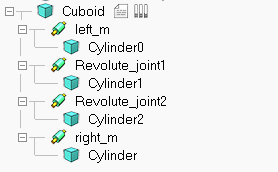
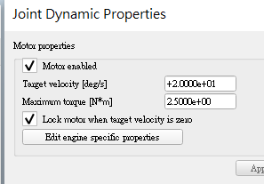
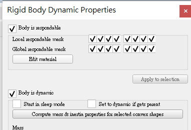
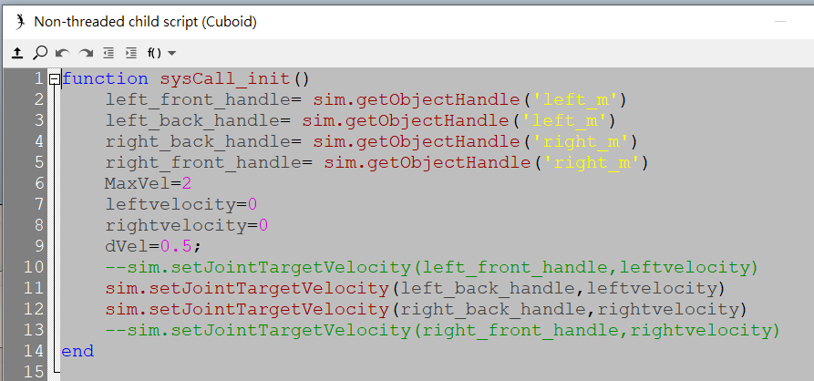

MechanicalDesignProcess <<
Previous Next >> assignment3
Keyboard control car
v-rep檔案:four wheel car setting to contorl turn right or left
程式碼可以參閱week6-week9的部分

先從所使用的 3d cad 軟體中將零件繪製好，將各零件轉為 stl檔，使用 v-rep 中的 import 導入剛剛轉檔好的 stl 零件，轉好後將零件所對應的相對運動位置依照圖示中的方式排序，馬達也必須要設定好(可以從 add > joint 中加入所想要的馬達電機)， 其排序的方式會影響到之後設定馬達的運動模擬方式，並且在主體零件上添加指令輸入用的子程式(可以從 add > asscoiated 中選擇要加入的子程式選項)

在電機馬達設定好之後可以點左上圖所示的馬達圖標，然後點擊子視窗下的 show dynamic properties dialog，可以藉由勾選 motor properties 以啟動馬達，並可以藉由調整轉動速度和力矩達到所想要馬達轉動之效果，底下的 lock motor when target velocity is zero則可以使馬達速度為零時鎖定住馬達，如果想要馬達處於被動狀 態(被動關節)則可以將馬達啟動之選項關閉。

設定好馬達後，設定主體零件和其他附屬零件的動力學模擬， 同樣點選想要設定零件之圖示， 並點擊 show dynamic properties dialog，點擊後若想要將該物件設定為可碰撞或者是可以被其他物件響應的狀態則可勾選 body is respondable， 而底下的 body is dynamic 則可以使該物件在模擬時為動態執行，使在模擬時物件受到動力學的影響而產生移動，或轉動等變化。

從上述的 add > asscoiated 可以得到一個可編輯的子程式，在該子程式中可以利用指令去使我們設定好的物件透過電機組轉速或者式角度的控制以使得我們的機構能夠依照我們想要的方式去做運動，左圖中的程式碼可以使我們得 4 輪車被鍵盤中的上下左右鍵控制，使其達到加速減速左轉右轉的運動模擬型態(因為空間所以只擷取部分程式碼)。
前半部分馬達設定教學影片:
鍵盤控制左右轉及加減速影片:
參考資料:
https://www.coppeliarobotics.com/helpFiles/en/shapeDynamicsProperties.htm(動
力學設定官方簡介)
https://www.coppeliarobotics.com/helpFiles/en/childScripts.htm(關於非線性子程
式和線性子程式的官方簡介)
https://github.com/s40723221/cd2020/tree/master/downloads(在我的 downaloads
下可以找到有關的內容和範例)
結論:在剛開始我們只學會如何將電機設定置輪軸，使整輛四輪可以順利的直行，對於動力學中的設定也就是 show dynamic properties dialog 點進去後設定的body is respondable 和 body is dynamic 都必須要設定完整才可以使四輪車依照所想要的方式提供動態及物理碰撞，若要使四輪車可以依照所想要的方式運行，在下一部份使用鍵盤控制也不需從設定子程式開始，也就是從(add > associated> non threaded)開始，設定好子程式編輯器之後才可以點開子程式編輯器開始我們對於鍵盤前後左右的程式編輯，我們可以從程式中去選擇我們想要控制的馬達，以這個前後左右的四輪車為例，我們可以透過已經更名為 left_m 和 right_m的兩顆電機馬達對其做轉速的控制，也就是我們在上面程式的圖式中看到的那一段程式碼，我們可以透過 syscall_init 來對我們的馬達做控制，完成以上的步驟後就可以以鍵盤控制其前四輪車做前後左右的控制了。
MechanicalDesignProcess <<
Previous Next >> assignment3